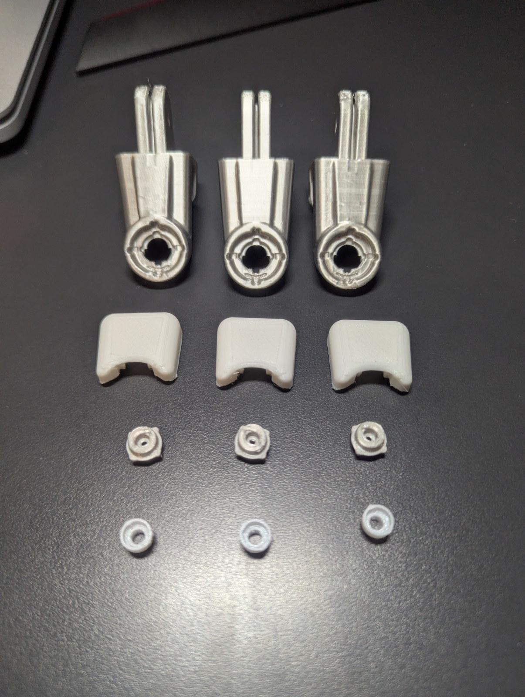

projects / 2
10-DOF Anthropomorphic Dexterous Hand
A fully articulated 10-degree-of-freedom anthropomorphic robotic hand engineered from first principles. Sculpted with advanced SolidWorks surface modelling to package 10 micro-servos into an ergonomic human-scale palm cavity, driven by antagonistic braided tendon cabling, and powered by an isolated transient-safe 6V/10A power rail.
Live bench actuation demo: DOIT ESP32 DevKit controlling coordinated multi-digit finger spread (abduction/adduction) and independent thumb opposition via I²C register offloading.
- Engineered a high-transient power architecture with dual XL4015 buck converters and 4,700 µF bulk decoupling capacitance that effortlessly absorbs 10 A simultaneous stall surges across 10 servos without dropping logic rails.
- Eliminated PWM timing jitter by offloading 10 channels of 50 Hz pulse generation to an NXP PCA9685 12-bit hardware driver over I²C (400 kHz Fast-mode), ensuring zero interference from RTOS context switches.
- Packed 10 independent actuators into an anthropomorphic palm using advanced SolidWorks surface modelling (boundary surfacing and continuous lofts) to maintain human proportions with sub-millimeter internal clearances.
- Designed a low-friction antagonistic tendon transmission utilizing braided high-tensile fishing wire routed around custom idler spools and knuckle hinge pivots for zero-backlash bidirectional control.
01Mechanical Design — Surface Modelling & Packaging
Fitting ten independent servo actuators into an ergonomic human-scale hand enclosure required treating the palm as an organic sculpted shell rather than a rigid prismatic box. The outer skin was sculpted in SolidWorks using multi-guide boundary surfaces and lofts to optimize internal cavity volume while matching human anthropomorphic proportions.

Front assembly CAD. Ten micro-servos packaged into the palm cavity — four lower servos drive base knuckle articulation, four upper servos drive intermediate links, and two dedicated servos drive the 2-DOF thumb.

Rear chassis & lower bay. The posterior enclosure features precision snap pockets for servo casings and houses the lower PCA9685 16-channel PWM driver board directly above the wrist pivot.
Antagonistic tendon transmission. Rather than heavy direct-drive linkages or single-direction spring returns, each finger digit utilizes a closed-loop antagonistic tendon path. High-tensile braided fishing wire routes around internal idler pulleys at each phalanx joint, returning to the servo spool for crisp, backlash-free bidirectional curling and extension.
Integrated wire guides. Internal guiding radii were extruded directly into each 3D-printed phalanx to prevent line derailment and maintain consistent moment arms throughout full 90° angular deflection.


Precision servo spools. Custom 3D-printed pulley spools press-fit onto the MG90S splines with set-screw anchors to securely lock tendon tension without slippage.

2-DOF opposable thumb. Independent base servo provides lateral abduction/adduction sweep, while an angled knuckle servo drives primary flexion for power and pinch grasps.

Integrated forearm & buck housing. The hollow forearm stand acts as both a stable mounting pedestal and a dedicated electrical housing. Dual high-efficiency buck converters are enclosed internally directly beneath the wrist pivot, minimizing DC resistance and harness length to the palm actuators.
Concealed wire raceway. Thirty individual servo conductors and power leads pass seamlessly through a central hollow wrist pivot into the lower base, leaving zero external wiring exposed on the finished assembly.
02Additive Manufacturing & Rapid Prototyping
All mechanical components — including finger phalanges, knuckle pivots, palm chassis halves, and forearm housings — were fabricated via high-resolution FDM 3D printing on an Elegoo build platform. Optimized slicing parameters and organic tree supports ensured dimensional accuracy across critical bearing pockets and heat-set insert holes.

Elegoo build plate. Printed components arranged with organic tree supports to minimize contact scarring on curved cosmetic surfaces and maintain roundness in hinge pin bores.

Phalanx hinge detail. Close-up of 0.12 mm layer line resolution on an intermediate finger segment, showing integrated tendon routing cavity and hinge pivot clevis.

Modular digit components knolling. Layout of finished printed components prior to assembly: metal-finish finger linkages, snap-fit knuckle caps, low-friction pivot bushings, and retention collars.
Heat-set insert reinforcement. Critical structural fasteners thread into brass M2 and M3 heat-set inserts melted into printed bosses, eliminating stripped plastic threads during repeated tension adjustments.
03Mechanical Assembly & Tendon Rigging
Assembly proceeded from individual digits to full palm integration. Joint pivots were press-fitted, braided line was threaded through micro-pulleys with calibrated preload, and ten actuators were nested into the sculpted palm chassis.
Fingertip & nut assembly. Press-fitting miniature hex nuts into distal phalanx retention pockets and preparing silicone contact pads for high-friction grip.
Tendon rigging & servo alignment. Dressing servo lead bundles, threading braided lines through pulley guides, and verifying free joint articulation before tension lock.
Chassis integration. Installing 8 MG90S servos into the multi-tier palm skeleton and aligning the 2-DOF thumb pivot hinge.

Full 5-finger bench assembly. Top-down view of the assembled hand on the workbench with all five articulated digits installed and servo wiring harnesses prepped for termination.

Macro close-up: High-strength braided fishing wire routed over custom 3D-printed idler spools and anchored to the servo horn, providing high tensile strength with near-zero elongation under load.
04Electrical Architecture — Transient-Safe Power
Ten simultaneous micro-servo stalls pull over 10 A of transient current, creating severe inductive back-EMF spikes and rail sag that would instantly reset standard microcontrollers. The electrical architecture completely isolates the logic and motor power rails.
Dual buck regulation. The forearm pedestal houses high-current XL4015 buck converter modules stepping down external 12V DC input to a stable 6.0V servo supply capable of delivering 10A continuous.
Bulk transient suppression. A 4,700 µF low-ESR electrolytic capacitor bank is mounted directly adjacent to the servo distribution bus, acting as a local energy reservoir to buffer inductive stall surges and prevent voltage sag.
Complete logic isolation. The ESP32 3.3V logic rail connects exclusively to the VCC of the PCA9685 driver. The 6.0V high-current bus feeds only the V+ motor rail, completely decoupling inductive noise from the MCU.


Buck converter terminal block. Heavy-gauge power cabling secured into terminal blocks inside the printed forearm stand to minimize contact resistance.
Power harness wiring. Dressing twisted-pair DC lines and routing the 6V high-current bus through the wrist pedestal up into the palm PCA9685 driver.
- Actuator Power Rail6.0V Regulated DC @ 10A Continuous (Dual XL4015 Buck Modules)
- Transient Suppression4,700 µF 16V Low-ESR Bulk Capacitance on Motor Rail
- Logic ArchitectureESP32 DevKit @ 3.3V Logic, Optically/Galvanically Isolated from Motor Bus
- PWM Offloading DriverNXP PCA9685 16-Channel 12-Bit PWM Controller via I²C (400 kHz)
- PWM Carrier Frequency50 Hz (20 ms period), 0.5 ms – 2.5 ms Pulse Width Range (4096-step resolution)
- Cable ManagementInternal hollow wrist raceway, strain-relieved DC input jack, silicone non-slip base
05Embedded Firmware & Actuation Testing
Firmware developed in C++ on the DOIT ESP32 DevKit V1 offloads 50 Hz PWM generation to the PCA9685 over the hardware I²C bus. An interactive serial control interface allows real-time keyboard calibration of servo endpoints, tendon tension, and multi-finger coordinated kinematics.
Interactive serial control bench. Real-time keystroke mapping to individual servo channels in the Arduino Serial Monitor (`Pin 6 -> PULL`, `Pin 7 -> RELEASE`), validating tendon travel limits, zero-positioning, and stall current safety margins.
Hardware-timed pulse precision. Offloading PWM pulse generation to dedicated 12-bit PCA9685 hardware registers prevents pulse jitter caused by ESP32 FreeRTOS context switching or WiFi background tasks.
Multi-digit spread (abduction/adduction). Coordinated lateral splay across index, middle, ring, and pinky fingers, validating full kinematic range and zero mechanical collision between adjacent knuckles.
Full digit flexion loop. Smooth, proportional curling from open palm to clenched grip, demonstrating the high stiffness and responsiveness of the antagonistic tendon rigging.
06Final System Integration & Showcase
The completed 10-DOF dexterous hand assembled on its desktop display pedestal. The sleek white-and-silver aesthetic mirrors modern humanoid robotics, combining organic anatomical surface curvature with functional engineering durability.


Clenched fist pose. Close-up showing natural human knuckle cascading and secure opposable thumb wrap, validating the SolidWorks surface modelling palm contours.

Side profile. Demonstrating thumb opposition plane, ergonomic palm contouring, and clean integrated forearm pedestal.